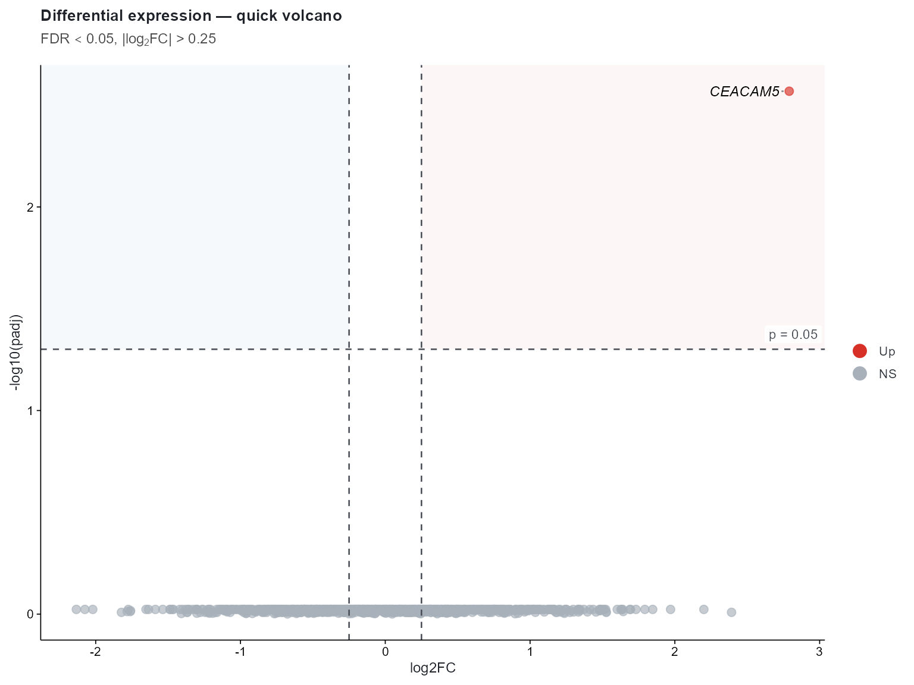
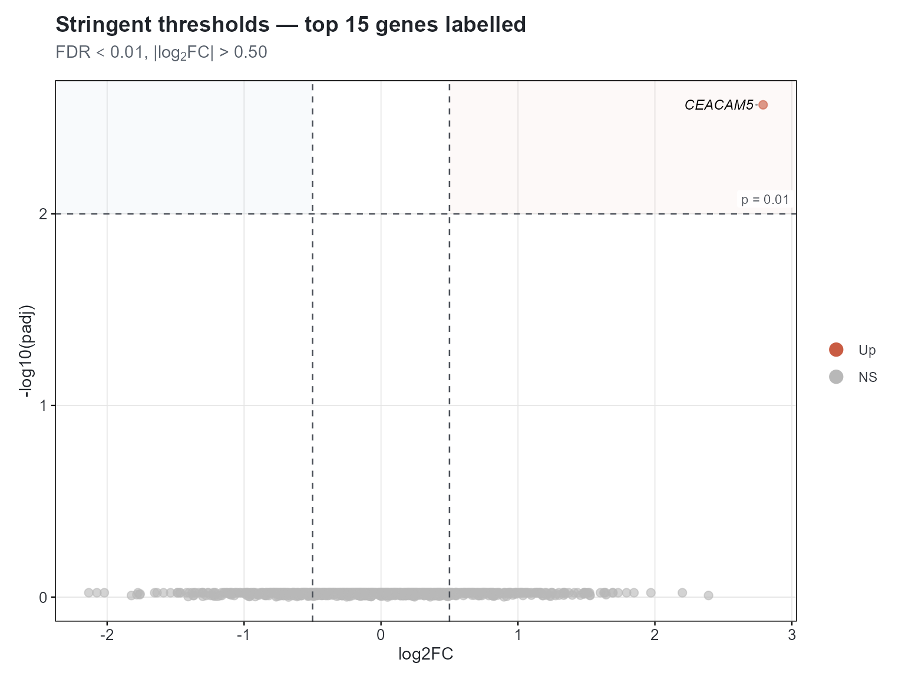
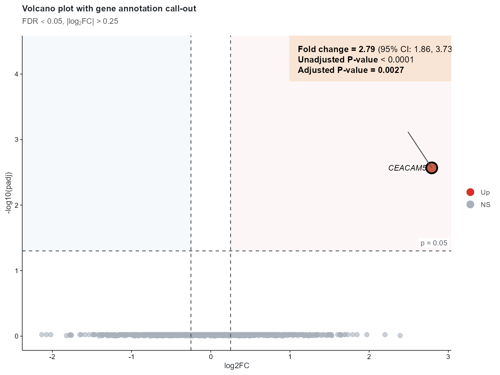

Volcano Plots — from Quick to Publication-Ready
Lucas VHH Tran
2026-07-16
Source:vignettes/volcano-plot.Rmd
volcano-plot.RmdOverview
The volcano plot is the canonical visualisation for
differential-expression analysis. This vignette shows you the
one-liner with cliplot() and then dives
into customisation — adjusted p-values, flexible fold-change thresholds,
gene labelling, and rich annotation call-outs — all with the
type_volcano() constructor.
1. Simulated data
Replace this section with your own DESeq2 / edgeR / limma output table.
set.seed(2026)
de_results <- data.frame(
gene = paste0("Gene_", 1:1000),
log2FC = rnorm(1000, mean = 0, sd = 0.7),
pvalue = runif(1000, 0.00001, 1),
padj = p.adjust(runif(1000, 0.00001, 1), method = "BH"),
row.names = paste0("Gene_", 1:1000)
)
# Inject a strongly significant hit
de_results <- rbind(
de_results,
data.frame(
gene = "CEACAM5",
log2FC = 2.79,
pvalue = 0.0001,
padj = 0.0027,
row.names = "CEACAM5"
)
)
head(de_results[, c("gene","log2FC","pvalue","padj")])
#> gene log2FC pvalue padj
#> Gene_1 Gene_1 0.36441235 0.961683824 0.9482873
#> Gene_2 Gene_2 -0.75578353 0.250218781 0.9889257
#> Gene_3 Gene_3 0.09746668 0.816042035 0.9482873
#> Gene_4 Gene_4 -0.05932415 0.543788992 0.9482873
#> Gene_5 Gene_5 -0.46664773 0.908309869 0.9482873
#> Gene_6 Gene_6 -1.76126232 0.007981887 0.9713784Your data. Columns must include a log2 fold-change, a (preferably adjusted) p-value, and optional gene identifiers as
row.names.
2. Quick volcano — one call
cliplot(-log10(padj) ~ log2FC, data = de_results,
type = type_volcano(
pval_cutoff = 0.05,
fc_cutoff = 0.25,
point_alpha = 0.65,
label_genes = "significant",
max_overlaps = 20
),
palette = "nature",
theme = "nature",
title = "Differential expression — quick volcano",
subtitle = expression(FDR < 0.05 * ", |" * log[2] * "FC| > 0.25"))
That single call produces:
- Points coloured by significance class (Up / Down / NS)
- Dashed threshold lines at the chosen p-value and fold-change cutoffs
- Automatic
ggrepellabels for every gene passing both thresholds - A journal-style theme with curated palette
3. Customising every parameter
Every visual element is exposed. Below we tighten the thresholds, change the colour mapping, add a shaded significance region, and label only the top 15 hits by adjusted p-value.
# Identify top-15 significant genes
sig_idx <- order(de_results$padj)[1:15]
top_genes <- rownames(de_results)[sig_idx]
cliplot(-log10(padj) ~ log2FC, data = de_results,
type = type_volcano(
pval_cutoff = 0.01,
fc_cutoff = 0.50,
up_color = "#C95C43",
down_color = "#4C8BA8",
ns_color = "#B8B8B8",
point_alpha = 0.62,
label_genes = top_genes,
max_overlaps = 30,
cutoff_region_alpha = 0.04,
show_threshold_labels = TRUE
),
palette = "jco",
title = "Stringent thresholds — top 15 genes labelled",
subtitle = expression(FDR < 0.01 * ", |" * log[2] * "FC| > 0.50"))
4. Gene annotation call-out
For a publication figure you often want one or two genes highlighted
with a detailed annotation box reporting the
fold-change, confidence interval, and exact p-values.
type_volcano works with plain
geom_label_repel; you can layer a richer annotation on top
using ggtext::geom_richtext.
# Build annotation for CEACAM5
highlight <- de_results[rownames(de_results) == "CEACAM5", ]
highlight$ci_low <- 1.86
highlight$ci_high <- 3.73
highlight$annot <- paste0(
"<b><i>", highlight$gene, "</i></b>",
"<br><br>",
"<b>Fold change = ", round(highlight$log2FC, 2), "</b>",
" (95% CI: ", highlight$ci_low, ", ", highlight$ci_high, ")",
"<br>",
"<b>Unadjusted P-value</b> < 0.0001",
"<br>",
"<b>Adjusted P-value = ", format(highlight$padj, digits = 2), "</b>"
)
# Base volcano from cliplot, then layer annotation
p_base <- cliplot(-log10(padj) ~ log2FC, data = de_results,
type = type_volcano(
pval_cutoff = 0.05,
fc_cutoff = 0.25,
label_genes = "significant",
max_overlaps = 15,
point_alpha = 0.60
),
palette = "nature", theme = "nature",
title = "Volcano plot with gene annotation call-out",
subtitle = expression(FDR < 0.05 * ", |" * log[2] * "FC| > 0.25"))
# Layer highlight + annotation on top of the returned ggplot
p_annot <- p_base +
ggplot2::geom_point(
data = highlight,
ggplot2::aes(x = log2FC, y = -log10(padj)),
inherit.aes = FALSE,
shape = 21, size = 5, stroke = 1.4,
fill = "#C95C43", colour = "black"
) +
ggtext::geom_richtext(
data = highlight,
ggplot2::aes(x = log2FC - 1.8, y = -log10(padj) + 1.8,
label = annot),
inherit.aes = FALSE,
hjust = 0, vjust = 0.5,
size = 3.5, fill = "#F9E5D5", colour = "black",
label.colour = NA, label.padding = grid::unit(c(8, 10, 8, 10), "pt")
) +
ggplot2::geom_segment(
data = highlight,
ggplot2::aes(x = log2FC, y = -log10(padj),
xend = log2FC - 0.3, yend = -log10(padj) + 0.55),
inherit.aes = FALSE,
linewidth = 0.5, colour = "#555555"
)
p_annot
5. Using your own data
Your differential-expression pipeline (DESeq2, edgeR, limma, …) produces a table with at least these columns:
| Column | Description |
|---|---|
log2FC |
log2 fold-change |
pvalue |
raw p-value |
padj |
multiple-testing adjusted p-value (FDR) |
Row names should hold gene / probe identifiers.
# Example: loading DESeq2 output
res <- read.csv("differential_expression_results.csv")
rownames(res) <- res$gene_symbol
cliplot(-log10(padj) ~ log2FC, data = res,
type = type_volcano(
pval_cutoff = 0.05,
fc_cutoff = 0.25,
label_genes = "significant",
max_overlaps = 20
),
title = "Differential expression results")Tip. If your adjusted p-value column contains exact zeros (common with DESeq2 for highly significant genes), cap them before calling
cliplot:res$padj <- pmax(res$padj, 1e-300)
6. Export for publication
# High-resolution PNG for manuscript
cliplot(-log10(padj) ~ log2FC, data = de_results,
type = type_volcano(),
theme = "nature", palette = "nature",
file = "fig_volcano.png", width = 9, height = 7)
# Vector PDF for journal submission
cliplot(-log10(padj) ~ log2FC, data = de_results,
type = type_volcano(),
theme = "nature", palette = "nature",
file = "fig_volcano.pdf", width = 9, height = 7)Summary
| What you want | How to do it |
|---|---|
| Quick volcano | cliplot(-log10(padj) ~ log2FC, data, type = "volcano") |
| Custom thresholds | type_volcano(pval_cutoff = 0.01, fc_cutoff = 0.5) |
| Label all significant genes | type_volcano(label_genes = "significant") |
| Label specific genes | type_volcano(label_genes = c("TP53","EGFR","BRCA1")) |
| Change colours | type_volcano(up_color = "#FF0000", down_color = "#0000FF") |
| Annotation call-out | Returned ggplot object +
ggtext::geom_richtext()
|
| Export |
file = "fig.pdf", width = 9,
height = 7
|